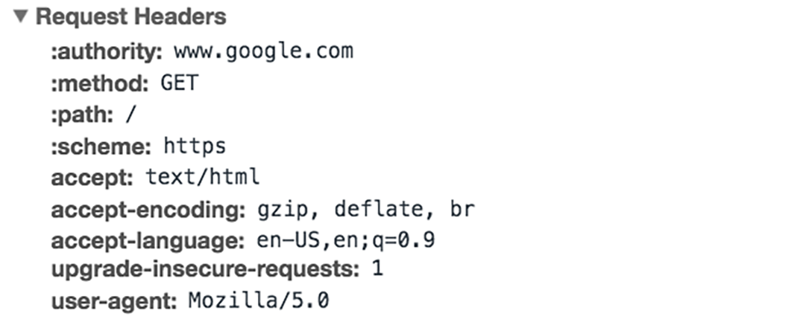
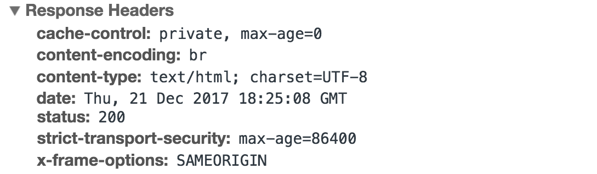

El Internet consiste en una serie de computadoras interconectadas mediante la utilización de protocolos estandarizados.
Para comprender el Internet, primero se debe entender qué es una red.
Una red son computadoras u otros dispositivos (como celulares, impresoras, etc.) conectados entre sí.
Internet fue desarrollado a finales de la década de 1960 por el Departamento de Defensa de los Estados Unidos. Su propósito era crear una red de comunicación descentralizada que pudiera resistir un ataque nuclear. Con el paso de los años, evolucionó hasta convertirse en una red compleja y sofisticada que se utiliza en todo el mundo.
Internet funciona conectando dispositivos y sistemas de computadoras utilizando un conjunto de protocolos estandarizados. Estos protocolos definen cómo se intercambia la información entre dispositivos y garantizan que la información se transmita de manera confiable y segura.
El núcleo de Internet es una red global de routers interconectados, responsables de dirigir el tráfico entre diferentes dispositivos y sistemas. Cuando envías información a través de Internet, esta se descompone en pequeños paquetes que se envían desde tu dispositivo al router. El router examina el paquete y lo dirige al siguiente router siguiendo una ruta para que alcance su destino. Este proceso continúa hasta que el paquete encuentra su destino final.
Para asegurarse de que los paquetes se envíen correctamente, Internet utiliza una variedad de protocolos, incluyendo el "Internet Protocol" (IP) y el "Transmission Control Protocol" (TCP).
El IP es responsable de encaminar los paquetes a su destino correcto.
El TCP se encarga de asegurar que los paquetes se envíen de manera confiable y en el orden adecuado.
Además de estos protocolos fundamentales, existen una amplia variedad de otras tecnologías y protocolos que se utilizan para permitir la comunicación e intercambio de datos en Internet. Algunos ejemplos son el Sistema de Nombres de Dominio (DNS), el Protocolo de Transferencia de Hipertexto (HTTP) y el protocolo de Capa de Conexión Segura/Seguridad de Capa de Transporte (SSL/TLS). Como desarrollador, es fundamental comprender cómo estas distintas tecnologías y protocolos colaboran para posibilitar la comunicación y el intercambio de datos en Internet.
Internet tiene tres partes básicas:
La última milla: Es la parte de Internet que conecta hogares y pequeñas empresas a la red.
La última milla también incluye las torres que permiten a las personas acceder a Internet con sus teléfonos celulares. El servicio inalámbrico de Internet representa una parte grande y creciente de todo el uso de Internet.
Centros de datos (Data Centers): Son salas llenas de servidores que almacenan datos de usuarios y alojan aplicaciones y contenido en línea. Algunos son propiedad de grandes empresas como Google y Facebook. Otros son instalaciones comerciales que brindan servicio a muchos sitios web más pequeños. Los centros de datos tienen conexiones a Internet muy rápidas, lo que les permite atender a muchos usuarios al mismo tiempo. Los centros de datos pueden estar ubicados en cualquier parte del mundo, pero a menudo se encuentran en áreas remotas donde la tierra y la electricidad son más baratas. Por ejemplo, Google, Facebook y Microsoft han construido vastos centros de datos en Iowa.
La columna vertebral (backbone): Consiste en redes de larga distancia, en su mayoría de cables de fibra óptica, que transportan datos entre los centros de datos y los consumidores. El mercado de la columna vertebral es altamente competitivo. Los proveedores de la columna vertebral a menudo conectan sus redes en puntos de intercambio de Internet (IEPs), generalmente ubicados en las principales ciudades. Establecer una presencia en los IEP facilita mucho a los proveedores de la columna vertebral mejorar sus conexiones con otros.
Nadie controla Internet. Está organizado como una red descentralizada de redes. Miles de empresas, universidades, gobiernos y otras entidades operan sus propias redes e intercambian tráfico entre sí en función de acuerdos voluntarios de interconexión.
Los estándares técnicos compartidos que hacen que Internet funcione son administrados por una organización llamada Grupo de Trabajo de Ingeniería de Internet (IETF, por sus siglas en inglés). El IETF es una organización abierta; cualquier persona puede asistir a sus reuniones, proponer nuevos estándares y recomendar cambios a los estándares existentes. No es obligatorio que se adopten los estándares respaldados por el IETF, pero el proceso de toma de decisiones basado en el consenso del IETF ayuda a garantizar que sus recomendaciones sean generalmente aceptadas por la comunidad de Internet.
La Corporación de Internet para la Asignación de Nombres y Números (ICANN) a veces se describe como responsable de la gobernanza de Internet. Como su nombre indica, ICANN se encarga de distribuir nombres de dominio (como vox.com) y direcciones IP. Pero ICANN no controla quién puede conectarse a Internet ni qué tipo de información se puede enviar a través de él.
Para entender Internet, es importante familiarizarse con algunos conceptos y terminología básicos. Aquí tienes algunos términos y conceptos clave que debes conocer:
Comprender estos conceptos y términos básicos es esencial para trabajar con Internet y desarrollar aplicaciones y servicios basados en la web.
Los protocolos desempeñan un papel fundamental al permitir la comunicación e intercambio de datos en Internet. que definen cómo se intercambia información entre dispositivos y sistemas.
Existen muchos protocolos diferentes utilizados en la comunicación en Internet, incluyendo el Protocolo de Internet (IP), el Protocolo de Control de Transmisión (TCP), el Protocolo de Datagrama de Usuario (UDP), el Sistema de Nombres de Dominio (DNS) y muchos otros.
El DNS convierte nombres de dominio en direcciones IP, permitiendo la navegación web:
Beneficios del DNS:
El IP se encarga de encaminar paquetes de datos hacia su destino correcto, mientras que TCP y UDP se aseguran de que los paquetes se transmitan de manera confiable y eficiente. DNS se utiliza para traducir nombres de dominio en direcciones IP, y HTTP se usa para transferir datos entre clientes y servidores.
Uno de los beneficios clave de utilizar protocolos estandarizados es que permiten que dispositivos y sistemas de diferentes fabricantes y proveedores se comuniquen entre sí sin problemas. Por ejemplo, un navegador web desarrollado por una empresa puede comunicarse con un servidor web desarrollado por otra empresa, siempre y cuando ambos sigan el protocolo HTTP.
Las direcciones IP y los nombres de dominio son conceptos importantes para entender al trabajar con Internet.
Una dirección IP es un identificador único asignado a cada dispositivo en una red. Se utiliza para dirigir datos al destino correcto, asegurando que la información llegue al destinatario previsto. Las direcciones IP suelen representarse como una serie de cuatro números separados por puntos, como "192.168.1.1".
Por otro lado, los nombres de dominio son nombres legibles por humanos utilizados para identificar sitios web y otros recursos en Internet. Normalmente están compuestos por dos o más partes separadas por puntos. Por ejemplo, "google.com" es un nombre de dominio. Los nombres de dominio se traducen en direcciones IP mediante el Sistema de Nombres de Dominio (DNS).
El DNS es una parte fundamental de la infraestructura de Internet, encargada de traducir nombres de dominio en direcciones IP. Cuando ingresas un nombre de dominio en tu navegador web, tu computadora envía una consulta DNS a un servidor DNS, que devuelve la dirección IP correspondiente. Luego, tu computadora utiliza esa dirección IP para conectarse al sitio web u otro recurso que has solicitado.
HTTP (Protocolo de Transferencia de Hipertexto) y HTTPS (HTTP Seguro) son dos de los protocolos más comúnmente utilizados en aplicaciones y servicios basados en Internet.
HTTP es el protocolo utilizado para transferir datos entre un cliente (como un navegador web) y un servidor (como un sitio web). Cuando visitas un sitio web, tu navegador web envía una solicitud HTTP al servidor, solicitando la página web u otro recurso que has pedido. El servidor luego envía una respuesta HTTP de vuelta al cliente, que contiene los datos solicitados.
HTTPS es una versión más segura de HTTP, que cifra los datos transmitidos entre el cliente y el servidor mediante cifrado SSL/TLS (Capa de Sockets Seguros/Seguridad de Capa de Transporte). Esto proporciona una capa adicional de seguridad, ayudando a proteger información sensible como credenciales de inicio de sesión, información de pago y otros datos personales.
Cuando visitas un sitio web que utiliza HTTPS, tu navegador web mostrará un ícono de candado en la barra de direcciones, indicando que la conexión es segura. También puedes ver las letras "https" al comienzo de la dirección del sitio web en lugar de "http".
Primero lo primero, ¿qué es HTTP? HTTP es un protocolo de comunicación de la capa de aplicación basado en TCP/IP que estandariza cómo los clientes y los servidores se comunican entre sí. Define cómo se solicita y transmite contenido a través de internet.
Por protocolo de capa de aplicación, me refiero a que es simplemente una capa de abstracción que estandariza cómo se comunican los Hosts (clientes y servidores). HTTP en sí depende de TCP/IP para obtener solicitudes y respuestas entre el cliente y el servidor. De manera predeterminada, se utiliza el puerto TCP 80, pero también se pueden usar otros puertos. Sin embargo, HTTPS utiliza el puerto 443.
En este punto, ya debes estar convencido de por qué necesitábamos otra revisión del protocolo HTTP. HTTP/2 fue diseñado para el transporte de contenido con baja latencia. Las características clave o diferencias con respecto a la antigua versión HTTP/1.1 incluyen:
HTTP/2 aborda el problema de la mayor latencia que existía en HTTP/1.x al convertirlo en un protocolo binario. Al ser un protocolo binario, es más fácil de analizar, pero a diferencia de HTTP/1.x, ya no es legible por el ojo humano. Los elementos fundamentales de HTTP/2 son los Marcos y los Flujos.
Los mensajes HTTP ahora están compuestos por uno o más marcos. Existe un marco HEADERS para los metadatos y un marco DATA para la carga útil. Además, existen varios tipos de marcos (HEADERS, DATA, RST_STREAM, SETTINGS, PRIORITY, etc.) que puedes consultar en las especificaciones de HTTP/2.
A cada solicitud y respuesta HTTP/2 se le asigna un ID de flujo único y se divide en marcos. Los marcos son simplemente fragmentos de datos binarios. Una colección de marcos se llama Flujos. Cada marco tiene un ID de flujo que identifica el flujo al que pertenece, y cada marco tiene una cabecera común. Además, aparte de que el ID de flujo es único, vale la pena mencionar que cualquier solicitud iniciada por el cliente usa números impares y la respuesta del servidor tiene IDs de flujo pares.
Además de los encabezados (HEADERS) y los datos (DATA), otro tipo de marco que considero importante mencionar aquí es RST_STREAM, que es un tipo de marco especial utilizado para abortar un flujo específico, es decir, el cliente puede enviar este marco para que el servidor sepa que ya no necesita este flujo. En HTTP/1.1, la única forma de hacer que el servidor deje de enviar la respuesta al cliente era cerrando la conexión, lo que resultaba en una mayor latencia debido a que se debía abrir una nueva conexión para solicitudes consecutivas. En cambio, en HTTP/2, el cliente puede usar RST_STREAM para dejar de recibir un flujo específico mientras la conexión seguirá abierta y los otros flujos seguirán activos.
Dado que HTTP/2 es ahora un protocolo binario y, como mencioné antes, utiliza marcos y flujos para las solicitudes y respuestas, una vez que se abre una conexión TCP, todos los flujos se envían de manera asíncrona a través de la misma conexión sin abrir conexiones adicionales. A su vez, el servidor responde de la misma manera asincrónica, es decir, la respuesta no tiene un orden y el cliente utiliza el ID de flujo asignado para identificar a qué flujo pertenece un paquete específico. Esto también resuelve el problema de bloqueo de la cabeza de línea que existía en HTTP/1.x, es decir, el cliente no tiene que esperar la solicitud que está tomando tiempo y otras solicitudes seguirán siendo procesadas.
Esto formaba parte de un RFC separado que estaba destinado específicamente a optimizar los encabezados enviados. La esencia de esto es que cuando estamos accediendo constantemente al servidor desde un mismo cliente, hay muchos datos redundantes que estamos enviando en los encabezados una y otra vez, y a veces puede haber cookies que aumenten el tamaño de los encabezados, lo que resulta en el uso de ancho de banda y mayor latencia. Para superar esto, HTTP/2 introdujo la compresión de encabezados.
A diferencia de las solicitudes y respuestas, los encabezados no se comprimen en formatos como gzip o compress, sino que hay un mecanismo diferente para la compresión de encabezados. Los valores literales se codifican utilizando el código Huffman y tanto el cliente como el servidor mantienen una tabla de encabezados, omitiendo encabezados repetitivos (por ejemplo, el agente de usuario, etc.) en las solicitudes posteriores y haciendo referencia a ellos mediante la tabla de encabezados mantenida por ambos.
Hablando de encabezados, permíteme agregar que los encabezados siguen siendo los mismos que en HTTP/1.1, excepto por la adición de algunos encabezados seudo, es decir, :method, :scheme, :host y :path.
El push del servidor es otra característica tremenda de HTTP/2, donde el servidor, sabiendo que el cliente va a pedir cierto recurso, puede enviarlo al cliente sin que este último lo solicite. Por ejemplo, supongamos que un navegador carga una página web, analiza toda la página para averiguar el contenido remoto que debe cargar desde el servidor y luego envía solicitudes consecuentes al servidor para obtener ese contenido.
El push del servidor permite que el servidor disminuya las idas y vueltas al enviar los datos que sabe que el cliente va a solicitar. Cómo se hace esto es que el servidor envía un marco especial llamado PUSH_PROMISE para notificar al cliente que "¡Oye, voy a enviarte este recurso! No me lo pidas". El marco PUSH_PROMISE está asociado con el flujo que causó que se produjera el push y contiene el ID de flujo prometido, es decir, el flujo en el que el servidor enviará el recurso a ser empujado.
Un cliente puede asignar una prioridad a un flujo al incluir la información de priorización en el marco HEADERS con el que se abre un flujo. En cualquier otro momento, el cliente puede enviar un marco PRIORITY para cambiar la prioridad de un flujo.
Sin información de prioridad, el servidor procesa las solicitudes de manera asíncrona, es decir, sin ningún orden. Si se asigna una prioridad a un flujo, entonces, en función de esta información de priorización, el servidor decide cuántos recursos deben asignarse para procesar qué solicitud.
Hubo una extensa discusión sobre si la seguridad (a través de TLS) debería hacerse obligatoria para HTTP/2 o no. Al final, se decidió no hacerlo obligatorio. Sin embargo, la mayoría de los proveedores afirmaron que solo admitirían HTTP/2 cuando se usara sobre TLS. Por lo tanto, aunque HTTP/2 no requiere encriptación según las especificaciones, de todos modos se ha vuelto obligatorio en cierta medida por defecto. Dicho esto, HTTP/2 cuando se implementa sobre TLS impone algunos requisitos, es decir, se debe usar la versión TLS 1.2 o superior, debe haber un cierto nivel de tamaño mínimo de claves, se requieren claves efímeras, etc.
Una solicitud HTTP es la forma en que las plataformas de comunicación en Internet, como los navegadores web, solicitan la información que necesitan para cargar un sitio web.
Cada solicitud HTTP realizada a través de Internet lleva consigo una serie de datos codificados que contienen diferentes tipos de información. Una solicitud HTTP típica contiene:
Exploraremos en mayor profundidad cómo funcionan estas solicitudes y cómo se puede utilizar el contenido de una solicitud para compartir información.
Un método HTTP, a veces llamado verbo HTTP, indica la acción que la solicitud HTTP espera del servidor consultado. Por ejemplo, dos de los métodos HTTP más comunes son 'GET' y 'POST'; una solicitud 'GET' espera información de vuelta (por lo general, en forma de un sitio web), mientras que una solicitud 'POST' indica que el cliente está enviando información al servidor web (como información de un formulario, por ejemplo, un nombre de usuario y contraseña enviados).
Los encabezados HTTP contienen información de texto almacenada en pares clave-valor, y se incluyen en cada solicitud HTTP (y respuesta, más sobre eso más adelante). Estos encabezados comunican información básica, como qué navegador está utilizando el cliente y qué datos se están solicitando.
Ejemplo de encabezados de solicitud HTTP desde la pestaña de red de Google Chrome:
Este encabezado especifica la autoridad o el dominio al que el cliente está dirigiendo la solicitud. En este caso, la solicitud se dirige al dominio "www.google.com".
El método de solicitud indica la acción que el cliente desea realizar en el servidor. "GET" se utiliza para solicitar recursos, como páginas web o archivos, del servidor.
Este encabezado especifica la ruta o la ubicación del recurso dentro del dominio al que se está accediendo. En este caso, "/" se refiere a la raíz del sitio web.
Indica el esquema de protocolo utilizado para la comunicación. "https" indica que se está utilizando una conexión segura mediante HTTPS (Hypertext Transfer Protocol Secure).
Este encabezado especifica el tipo de contenido que el cliente está dispuesto a aceptar como respuesta. En este caso, el cliente acepta contenido en formato de texto HTML.
Indica los métodos de codificación que el cliente admite para la respuesta. Estos métodos permiten comprimir los datos antes de enviarlos, lo que puede mejorar la eficiencia de la transferencia.
Este encabezado especifica los idiomas preferidos por el cliente para la respuesta. "en-US" se prefiere con una alta prioridad, mientras que "en" también es aceptable con una prioridad ligeramente menor.
Indica que el cliente está dispuesto a actualizar una solicitud insegura a una versión segura. Esto puede ocurrir cuando se solicita una página HTTP y el cliente sugiere actualizar a HTTPS.
El agente de usuario es una cadena que identifica el navegador o la aplicación que realiza la solicitud. En este caso, el cliente se identifica como un navegador Mozilla/5.0.
El cuerpo de una solicitud es la parte que contiene la 'carga' de información que la solicitud está transfiriendo. El cuerpo de una solicitud HTTP contiene cualquier información que se envía al servidor web, como un nombre de usuario y una contraseña, o cualquier otro dato ingresado en un formulario.
Una respuesta HTTP es lo que los clientes web (a menudo navegadores) reciben de un servidor de Internet en respuesta a una solicitud HTTP. Estas respuestas comunican información valiosa en función de lo que se solicitó en la solicitud HTTP.
Una respuesta HTTP típica contiene:
Vamos a analizar esto con más detalle:
Los códigos de estado HTTP son códigos de 3 dígitos que se usan con mayor frecuencia para indicar si una solicitud HTTP se ha completado con éxito. Los códigos de estado se dividen en los siguientes 5 bloques:
El "xx" se refiere a diferentes números entre 00 y 99.
Los códigos de estado que comienzan con el número '2' indican un éxito. Por ejemplo, después de que un cliente solicita una página web, las respuestas más comúnmente vistas tienen un código de estado '200 OK', lo que indica que la solicitud se completó correctamente.
Si la respuesta comienza con un '4' o un '5', significa que hubo un error y la página web no se mostrará. Un código de estado que comienza con un '4' indica un error del lado del cliente (es muy común encontrar un código de estado '404 NOT FOUND' al cometer un error tipográfico en una URL). Un código de estado que comienza en '5' significa que algo salió mal en el lado del servidor. Los códigos de estado también pueden comenzar con un '1' o un '3', que indican una respuesta informativa y una redirección, respectivamente.
Al igual que una solicitud HTTP, una respuesta HTTP viene con encabezados que transmiten información importante, como el idioma y el formato de los datos que se envían en el cuerpo de respuesta.
Ejemplo de encabezados de respuesta HTTP desde la pestaña de red de Google Chrome:
Controla cómo deben almacenarse en caché las respuestas. Indica que la respuesta puede ser almacenada en caché de manera privada y que su edad máxima en caché es 0.
Indica el tipo de codificación aplicada al contenido de la respuesta para la transferencia. "br" sugiere que la respuesta está comprimida con Brotli.
Especifica el tipo de contenido de la respuesta y su conjunto de caracteres. La respuesta contiene texto HTML codificado en UTF-8.
Indica la fecha y hora en que se generó la respuesta en el servidor. Es útil para el control de caché y otros fines.
Muestra el código de estado de la respuesta. "200" indica que la solicitud se ha procesado con éxito y que se envía el contenido solicitado como respuesta.
Especifica la política de seguridad para la comunicación. Se establece que el sitio debe ser accesible a través de una conexión segura (HTTPS) durante un período de tiempo específico.
Controla si el contenido puede ser mostrado en un marco ("frame") en otro sitio web. "SAMEORIGIN" permite que el contenido se muestre en un marco si el origen es el mismo que el sitio actual.
Las respuestas HTTP exitosas a las solicitudes 'GET' generalmente tienen un cuerpo que contiene la información solicitada. En la mayoría de las solicitudes web, estos son datos HTML que un navegador web traducirá en una página web.
Ten en cuenta que HTTP es un protocolo "sin estado", lo que significa que cada comando se ejecuta independientemente de cualquier otro comando. En la especificación original, las solicitudes HTTP creaban y cerraban cada una una conexión TCP. En versiones más nuevas del protocolo HTTP (HTTP 1.1 y posteriores), la conexión persistente permite que varias solicitudes HTTP pasen por una conexión TCP persistente, mejorando el consumo de recursos. En el contexto de los ataques DoS o DDoS, las solicitudes HTTP en grandes cantidades se pueden utilizar para lanzar un ataque contra un dispositivo objetivo, y se consideran parte de los ataques de capa de aplicación o ataques de capa 7.
TCP/IP (Protocolo de Control de Transmisión/Protocolo de Internet) es el protocolo de comunicación subyacente utilizado por la mayoría de las aplicaciones y servicios basados en Internet. Proporciona una entrega confiable, ordenada y verificada de datos entre aplicaciones que se ejecutan en diferentes dispositivos.
Cuando construyes aplicaciones con TCP/IP, hay algunos conceptos clave que debes comprender:
Cuando construyas aplicaciones con TCP/IP, deberás asegurarte de que tu aplicación esté diseñada para funcionar con los puertos, sockets y conexiones adecuados. También deberás familiarizarte con los diversos protocolos y estándares que se utilizan comúnmente con TCP/IP, como HTTP, FTP (Protocolo de Transferencia de Archivos) y SMTP (Protocolo Simple de Transferencia de Correo). Comprender estos conceptos y protocolos es esencial para construir aplicaciones y servicios efectivos, escalables y seguros basados en Internet.
Como discutimos anteriormente, SSL/TLS es un protocolo utilizado para cifrar los datos que se transmiten por Internet. Se utiliza comúnmente para proporcionar conexiones seguras en aplicaciones como navegadores web, clientes de correo electrónico y programas de transferencia de archivos.
Cuando utilizas SSL/TLS para asegurar la comunicación en Internet, hay algunos conceptos clave que debes comprender:
Al construir aplicaciones y servicios basados en Internet, es importante entender cómo funciona SSL/TLS y asegurarte de que tu aplicación esté diseñada para usar SSL/TLS al transmitir datos sensibles como credenciales de inicio de sesión, información de pago y otros datos personales. También deberás asegurarte de obtener y mantener certificados SSL/TLS válidos para tus servidores, y seguir las mejores prácticas para configurar y asegurar tus conexiones SSL/TLS. Al hacerlo, podrás proteger los datos de tus usuarios y garantizar la integridad y confidencialidad de la comunicación de tu aplicación a través de Internet.
Y esto nos lleva a la conclusión. Hemos abordado mucho, así que tomémonos un momento para revisar lo que hemos aprendido:
La nube describe un enfoque de la informática que se volvió popular a principios de los años 2000. Almacenando archivos en servidores y entregando software a través de Internet, la computación en la nube brinda a los usuarios una experiencia informática más simple y confiable. La computación en la nube permite a consumidores y empresas tratar la informática como un servicio público, dejando los detalles técnicos en manos de las compañías tecnológicas.
Por ejemplo, en la década de 1990, muchas personas utilizaban Microsoft Office para editar documentos y hojas de cálculo. Almacenaban documentos en sus discos duros. Y cuando se lanzaba una nueva versión de Microsoft Office, los clientes tenían que comprarla e instalarla manualmente en sus PC.
En contraste, Google Docs es una suite de oficina en la nube. Cuando un usuario visita docs.google.com, obtiene automáticamente la última versión de Google Docs. Debido a que sus archivos se almacenan en los servidores de Google, están disponibles desde cualquier computadora. Aún mejor, no tiene que preocuparse por perder sus archivos en caso de un fallo del disco duro. (Microsoft ahora tiene su propia suite de oficina en la nube llamada Office 365).
Hay muchos otros ejemplos. Gmail y Hotmail son servicios de correo electrónico en la nube que han reemplazado en gran medida a los clientes de correo electrónico de escritorio, como Outlook. Dropbox es un servicio de computación en la nube que sincroniza automáticamente datos entre dispositivos, evitando que las personas tengan que llevar archivos en discos flexibles. iCloud de Apple copia automáticamente la música y otros archivos de los usuarios desde su computadora de escritorio a sus dispositivos móviles, ahorrando a los usuarios la molestia de sincronizar mediante una conexión USB.
La computación en la nube también tiene un gran impacto en las empresas. En la década de 1990, las compañías que deseaban crear un sitio web debían comprar y operar sus propios servidores. Pero en 2006, Amazon.com lanzó Amazon Web Services, que permite a los clientes alquilar servidores por hora. Eso ha reducido la barrera de entrada para la creación de sitios web y ha facilitado mucho que los sitios aumenten rápidamente su capacidad a medida que se vuelven más populares.